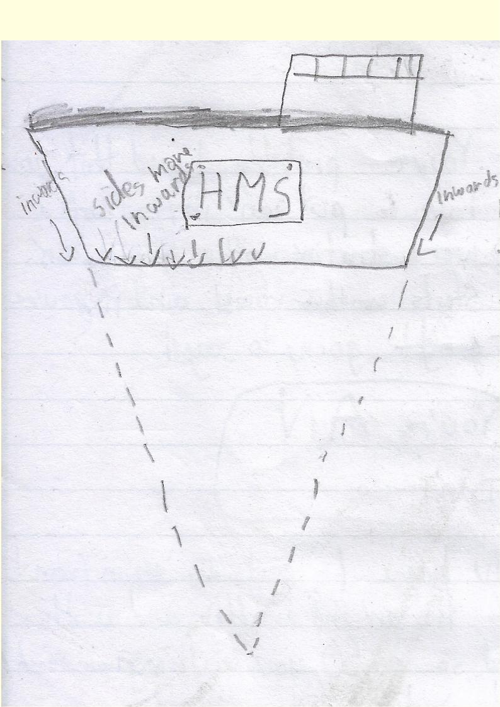

This book has been made purely for fun, and for the purpose of mocking logic. It has gone through a rigorous checking process to make sure that it does not comply with any true facts.
These rules can not be followed. If you go by the rules, you will fail your academics, and amount to nothing in life. Some rules may even pose a risk to your sanity. If they don't, the terrible
illustrations certainly will. We the authors of this book already serve this position.
Rule V
Ships should sink.
Ships have sides which slide inwards. This makes for a streamlined shape. A streamlined shape moves in the direction the sides point to, so in water, ships should sink. 
By fisik_yum.